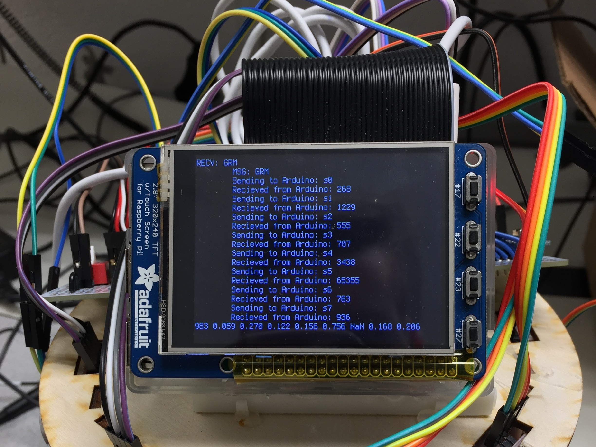
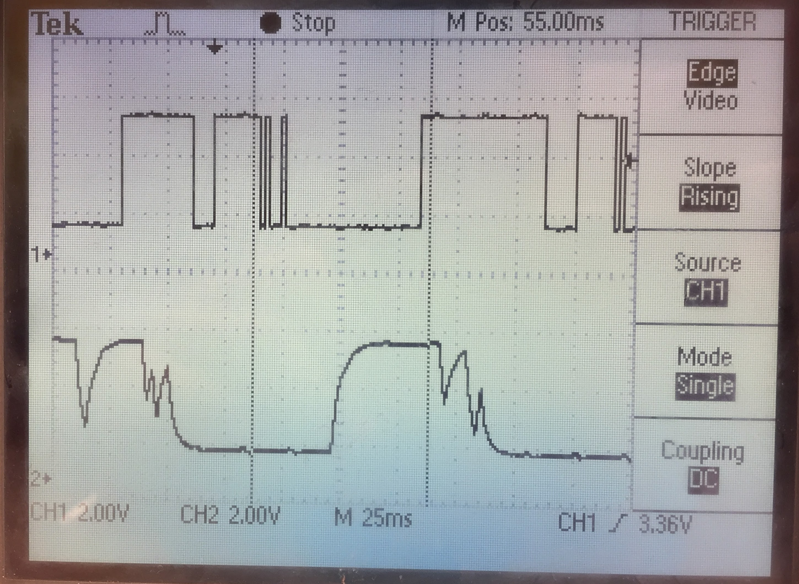

The goal of the RPiMapper project was to build a mobile robotics platform for autonomous mapping of a static environment using multiple ultrasonic range sensors. Environmental mapping was done using an occupancy grid method based on the algorithm detailed in Probabilistic Robotics. Localization was done by tracking the rotation of the wheel spokes with limited success. Future iterations should focus on improving the method of localization.
The RPiMapper consists of computer systems working together: the Arduino Nano, RPi3 and the Host computer. Their division of labor works to play to the strengths of each system. The Arduino generates the timing pulse required to control the motors and precisely measures the sonar pulse width. The RPi3 then communicates with the Arduino using I2C and relays measurements over a web socket to the host computer. To prevent timing issues on the Arduino, RPi3 receives raw measurements from the Arduino, which it then converts into SI units before sending the data along to the host computer. Similarly, wheel speeds that are given by the Host in m/s are converted into a percentage of max wheel speed before being sent to the Arduino. Finally, the Host computer uses a MATLAB script to update the occupancy grid based on the current sensor readings and estimated pose. It, then, presents a GUI for setting the robot's forward and angular velocity.

The development of the RPiMapper focused primarily on setting up communications, taking sensor measurements and controlling the motors. Mapping was handled using code written for MAE 5180: Autonomous Mobile Robots by Alex with slight modifications. By re-using this old code rather than reimplementing it on the Raspberry Pi, the scope of the project was reduced, and the resulting system is mostly compatible with the beagleoncreate system used by MAE 5180.
Communication via the Host computer and RPi3 is done using a TCP/IP web socket implemented in C on the RPi side and MATLAB on the Host computer side. A communications protocol was implemented on top of the web socket connection for sending commands and receiving data. The initial protocol attempted to typecast the data to be sent into a char array and then unpacked at the other end. This protocol was ultimately dropped for being difficult to debug and for it's general complexity.
Instead, each packet consists of a 1026 char array containing the data to be sent in plain text, with separate packet formats used for sending and receiving data. The 1026 buffer size is significantly larger than required and faster data rates could be achieved by reducing the packet or by allowing for arbitrary packet lengths. However, as transmission speeds were sufficiently fast, this was not pursued.
| Packet Type | Fomart | Example |
|---|---|---|
| Host -> RPi | CMD DATA | SMV 1.10 1.10 |
| RPI -> Host | TIMESTAMP Data | 10 Success |
Essentially, the protocol works by sending the RPi3 a 3 letter command followed by any additional information required by the request. For example "GRM" would be used to tell the RPi3 to return the current sonar measurements while "SWV 1.1 1.1" is used to tell the RPi3 to set both wheels to have a ground speed of 1.1 m/s.
Once the RPi3 has received a command it then performs the desired action and returns a response packet to the Host computer. The response packet consists of the number of seconds that the web socket has been opened, followed by the requested data. The time stamp is currently used only for debugging purposes, but was intended to allow for communication latency to be corrected for by the host computer.
Setting up communications between the RPi3 and the Arduino was surprising one of the most difficult components of the project. Specifically getting data to be sent from the Arduino to the RPi took longer than expected partially due to using wiringPII2C and partially due to a lack of familiarity with the I2C protocol. I had initially assumed that I2C would allow me to write data to the Arduino, and then have the Arduino immediately write data directly back to the RPi. This turned out to be entirely untrue as I2C is only a half-duplex protocol, thou I had been trying to treat it like a full-duplex protocol.
The solution to this was to have the Arduino buffer it's response after receiving a request from the RPi. The buffered response was then delivered when the RPi attempted to read from the Arduino. Overall this was a really simple fix, but it took me a quite a long time to realize the error that I had made.
The other source of difficult was my initial decision to use the wiringPi library for I2C communication on the RPi. In addition to a lack of solid documentation, the library restricts you to reading a fixed number of bytes from the device at a time. As a result, the data to be sent to the Pi would have to be dribbled in 1 character at a time, with both the RPi and Arduino having to keep track of which character should be sent.
Conversely, using the built-in Linux commands open, read and write can handle sending multiple bytes at a time, have through documentation, and were a breeze to setup by following an eLinux Tutorial. The switch from wiringPi to treating the I2C bus as a file took less than 30 minutes (Compared to the hours spent messing around with wiringPi).
Once two-way communications had been set up, a protocol was again created for transmitting data between the RPi and Arduino. Again, the initial protocol was planned to send data by typecasting into a char array. However, due to the difficulty of debugging a stream of binary data, this protocol was abandoned for sending data along as character array. Messages sent to the Arduino, consisted of a single command character followed by the required data. For example, "W 100 100" would set both wheels to 100 speed forward. Response consisted of solely of the response message. In both cases, the messages are terminated using the new line character.
As the I2C buffer for the Arduino is limited to 32 bytes, the entire set of sonar measurements can not be sent all at once. Instead, the RPi will sequentially request each sonars measurement. In order to reduce communication delays, sonar measurements are taken constantly and stored until the next sonar reading is ready. Thus the Arduino will always return the most recent sonar measurement and will give duplicate readings if polled at a rate faster than measurements are taken.
The sonar array consists of 8 Ultrasonic HC-SR04 sensors held in a circle via a custom laser cut mount. Each sonar takes in 2 signals (Trigger and Echo) and power and returns measured distance as the duration of a pulse on the Echo line. All sonars are triggered by a 10 us pulse generated on pin PD4 every 30ms. However, only a single sonar echo is listened for at a time, as detecting multiple sonars at once creates issues when multiple sonars arrive close together. While this reduces the update rate of the sonar array from 33 Hz to 4.2 Hz, the gains in accuracy more than makeup for it. The duration of each pulse is detected using enabling a Pin Change interrupt, on the sonar pin of interest using PCMSK0, PCMSK1 or PCMSK2 depending on the specific port of the sonar pin. Ideally, all sonars would be placed on a single I/O port of the atmega328p, however due to special functions pins this was not possible.
Rather than store the actual distance measurement in meters, the only the timer duration of the pulse is stored in a volatile unsigned long array containing the latest completed sonar measurement of each sonar. Essentially, sonar readings are stored in a rolling buffer so that the Arduino is always ready to return a reading for any sonar sensor.
The RPo requests sonar measurements one at a time due to the limited I2C buffer size (32 char max). New readings are requested using the command "sX" where "X" is the index of the sonar (0-7). Sonar measurements are then converted from a timer duration to a distance measurement using the following formula by the RPi. Which given the atmega328p's clock speed of 16Mhz, a TIMER1's 64 prescaler and the speed of sound (340.29 m/s) reduces to a constant multiplied by the echo pulse width in ticks. Additionally, sonar measurements greater than the max range of the sonar (3m) are replaced with "NaN".
For the scope of this project, I assumed that pose (Position and orientation) of the robot is known precisely using odometry. While this is not precisely true, the assumption allowed me to avoid the problem of simultaneous localization and mapping (SLAM), which is significantly harder than occupancy grid mapping. Rather than tackle SLAM or the development of an external motion capture system, localization using dead reckoning was assumed to be sufficient for the purposes of this project.
Odometry Measurements are taken by detecting the spokes of the drive wheel using a Pololu IR range finder based on Sharp's GP2Y0D805Z0F sensor. However, with only 8 spokes odometry can only detect wheel travel on the order of 1cm, and can only estimate direction based on the desired wheel speed. Further the detection of each spoke often cycles between high and low multiple times for a single spoke at low speeds. As a results the odometry system as a whole performs poorly at low wheel speeds.
The issue of the sensor state rapidly switching between high and low, was partially solved by adding a low pass filter to the output of the IR sensor. Using a 10KΩ resistor and 10µF capacitor, giving the filter a characteristic time of 0.1s. While this did improve the situation, as shown oscilloscope trace above, the issues was not fully negated. Additionally as shown in the video below, the issue is a combination of higher frequency jitter (the dark bands in the upper oscilloscope trace) as well as a lower frequency "double tap" on multiple wheel spokes as shown in the video below.
The spoke counts for the left and right wheel are detected using Atmega328p's INT0 and INT1 pin change interrupts to detect both the rising and falling edges of the signal so as to maximize the resolution of the measurements. The spoke counts are incremented based on the current desired wheel speeds to differentiate between forwards and backwards motion. Upon receiving a request for odometry measurements from the RPi3 (Packet command "O"), the counts for the left and right wheel are transmitted over I2C and then reset to zero to prevent double counting. The RPi3 then uses the following formula to convert the odometry counts into distance traveled and angle rotated odometry measurement before forwarding the information along the Host computer.

The RPiMapper is driven using two Parallax continuous rotation servos controlled using the Atmega328p's 8bit TIMER0. Per Parallax's documentation for the motor, the motor is control by suppling a 1.3-1.7ms pulse every 20ms to the control line. In order to improve the resolution of motor speed control, the timer's prescaler switches between 256x during the control pulse and 1024x during the 20ms hold off, allowing for a total of 27 theoretical motor speeds.
The robot's motion is specified by the Host control program in terms of a forwards and angular velocity about the robot center, which is then converted into a left and right wheel speeds using the following equation:
The robot wheel speeds are then sent to the RPi using the "SWV LS RS" command. Where LS/RS gives the ground speed of the left and right wheels respectively. The RPi3 the converts the desired ground speed into a percent motor speed command using the equation below. This equation assumes that the angular velocity of the wheel speeds is linearly related to the percent wheel speed by a factor (Wheel Speed Factor). While this is a decent first pass approximation, it over estimates the wheel speed at low throttle and underestimates at higher wheel speeds.
Once the percent motor throttle has been computed, it is transfered to the Arduino via I2C and the wheel speeds are updated for the next command pulse. The motor OCR0x value is then computed using the equation below. Where the Tick Factor gives the change in the pulse duration (In timer ticks) per percent wheel speed (0.125 ticks/%), and the 1.5ms Timer is he timer count the gives a 1.5ms pulse (93.5 ticks).
Generated Occupancy Grid
Environment being Mapped
Stationary mapping of a static environment produces believable results as shown in the figure above, thus confirming that sonar measurements are being streamed correctly streamed to Host computer. However, dynamic mapping of a static environment produces a significantly less believable map as shown below.
Occupancy Grid generated while moving
Environment being Mapped
In the above generated image odometry was not used, rather the robot was assumed to move forwards at a constant velocity and thus odometry errors cannot be blamed for the resulting map. The next most likely culprit is cross-talk between sonar sensors. As all sonar are fired for a given sensor, the return signal is not guaranteed to originate from the sensor being listen too. That is the echo heard by a given sonar sensor could have originated at any sonar, and thus represent a reflection from a near by object.
Using the wheel spokes as a wheel encoder limits the resolution of the wheel encoder to approximately 1cm, which when combined with multiple pulses for each spoke results generally poor system for localization. This could be improved upon significantly by using a higher resolution quadrature encoder which would give both a more precise measurement of wheel rotation and directly measure the direction of rotation. However, most commercial wheel encoders are both expensive and not plug and play for a given motor package and thus would push the limits of the project's $100 budget. However, this could pay significant dividends by enabling accurate localization via dead reckoning.
The sonar sensors used in the project separated the trigger line from the echo line, while this initially seemed to be a desirable feature as it allowed all sonars to be triggered using a single pin. Testing suggests the cross-talk between sonar sensors is a significant issue in the current configuration. Unfortunately, the Arduino Nano does not have enough I/O pins to support 8 sonars if the trigger and echo pins are wired separately for each sonar. The Octosonar project has achieved be able to implement a similar project by multiplexing the echo pins to a single I/O Pin. Future iterations may wish to take a similar direction.
Data is currently transmitted over I2C and the web socket in plain text, while this makes for an easy to debug protocol, it also wastes a lot of bandwidth. Sending data in a binary format could significantly reduce the protocol's overhead and further reduce communication latency. While latency does not appear to be a major issue with the current system, any latency will negatively impact the ability of the host computer to control the robot.
A SparkFun 9DOF Sensor Stick has been attached to the I2C and is currently visible to the RPi3. However, I was unable to establish communications with the device via the RPi3. A library exist for both the Arduino and the RPi, that should be able to provide an interface for communicating with the sensor. However, the Arduino library didn't play nice with the current Arduino code due to conflicting timer definition. Additional errors appear to have been caused by the Arduino being configured as a slave device, while the Sensor Stick library expect the Arduino to be a master device on the I2C bus.
The RPi version of the library should enable straight for communication with the Sensor Stick via a c class. However, I was unable to correctly compile the library and integrate it into the code. Future work should focus on compiling the library and integrating it into the code base. Once the Host machine has access to the IMU measurements, focus can shit to using a Kalman filter to integrate sensor input from odometry and the IMU to better estimate the current pose of the robot.
| Item | Qty | Item Cost | Total Cost |
|---|---|---|---|
| Ultrasonic Sensor- HC-SR04 | 8 | $3.95 | $31.60 |
| 9DOF Sensor Stick | 1 | $14.95 | $14.95 |
| Logic Level Converter - Bi Directional | 1 | $2.95 | $2.95 |
| Arduino Nano | 1 | $2.94 | $2.94 |
| Adafruit Perma-Proto Full-sized breadboard | 1 | $6.65 | $6.65 |
| Sharp GP2Y0D805Z0F Digital Distance Sensor 5cm | 2 | $5.95 | $11.90 |
| Parallax Continuous Rotation Servo | 2 | $13.99 | $27.98 |
| Raspberry Pi 3 | 1 | $39.95 | $39.95 |
| 12"x12" Craft Plywood (Sonar Mount) | 1 | $3.95 | $3.95 |
| SumoBot Wheel & Tire | 2 | $3.99 | $7.98 |
| Extension Jumper | 1 | $3.95 | $3.95 |
| Lab 3 Robotics Platform | 1 | N/A | $- |
| Total | $154.80 |
Check out the RPiMapper's git repository for the full code base and instructions on how to get started with RPiMapper.
This project would not have been possible without the help, guidance of Professor Skovira and Brendon Jackson. I would also like to thank the numerous class peers who guided me as I learned C, I2C and web sockets and helped me through Segmentation Faults and late nights.
bq, “Arduino Nano Pinout,” 19-Aug-2014. [Online]. Available: http://www.pighixxx.com/test/wp-content/uploads/2014/11/nano.png.
Atmel, “ATMEL 8-BIT MICROCONTROLLER WITH 4/8/16/32KBYTES IN-SYSTEM PROGRAMMABLE FLASH DATASHEET.” Nov-2015.
“beagleoncreate.” [Online]. Available: https://code.google.com/archive/p/beagleoncreate/.
eLinux, “Interfacing with I2C Devices - eLinux.org.” [Online]. Available: http://elinux.org/Interfacing_with_I2C_Devices.
“Linux Documentation.” [Online]. Available: https://linux.die.net/.
Sascha Nitsch Unternehmensberatung, “Linux Howtos: C/C++ -> Sockets Tutorial.” [Online]. Available: http://www.linuxhowtos.org/C_C++/socket.htm.
Michael Kerrisk, “Linux man pages online.” [Online]. Available: http://man7.org/linux/man-pages/index.html.
Sebastian Thrun, Wolfram Burgard, and Dieter Fox, Probabilistic Robotics. Available: http://www.probabilistic-robotics.org/.
Gordon Henderson, “WiringPi.” Available: http://wiringpi.com/
Parallax Inc, "PING))) Ultrasonic Distance Sensor," 4-Feb-2013. [Online]. Available https://www.parallax.com/sites/default/files/downloads/28015-PING-Sensor-Product-Guide-v2.0.pdf.
Elec Freaks, "Ultrasonic Ranging Module HC - SR04". [online]. Available: https://cdn.sparkfun.com/datasheets/Sensors/Proximity/HCSR04.pdf.
SparkFun, "9DoF Sensor Stick Hookup Guide," [Online]. Available: http://sfe.io/t542.
SparkFun, "Bi-Directional Logic Level Converter Hookup Guide," [Online]. Available: http://sfe.io/t147.
SparkFun, "SparkFun LSM9DS1 Arduino Library," [Online]. Available: https://github.com/sparkfun/SparkFun_LSM9DS1_Arduino_Library.
Akimasa KIMURA, "SparkFun LSM9DS1 RaspberryPI Library," [Online]. Available: https://github.com/akimach/LSM9DS1_RaspberryPi_Library.
Tom Preston-Werner, "GitHub Ribbons," [Online]. Available: https://github.com/blog/273-github-ribbons.
Alexius Wadell: alw224
{kind=link}